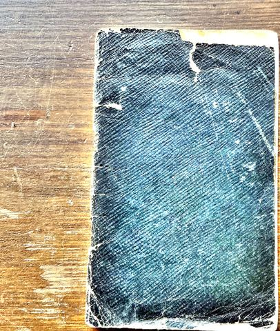
Front cover
Black cloth pocket notebook, worn at the corners and spine. No writing on the cover.
Sgt B. E. Shambrook, NX40242, 2nd Australian Imperial Force. Sydney to Palestine, April to August 1941. A reading transcription of his pocket notebook.
This is a small black cloth-bound pocket notebook, written mostly in pencil with a few pages in ink. Bernard carried it from the day he embarked on the Queen Elizabeth in Sydney, 9 April 1941, through the voyage to Suez and his first months in Palestine. It is not a daily diary. It mixes diary entries, nominal rolls, training notes, addresses, sketches, Arabic phrases and arithmetic, in the order a soldier's days threw them up.
The transcription below is a reading copy. Spelling and punctuation have been lightly regularised and abbreviations expanded where the meaning is clear. His own words and order are kept. Each page is shown beside its photograph so that any reading can be checked against the original.
Every place the notebook names, with the date Bernard gives for it. Click a card to go to it on the map. Click a marker to read what he wrote there.
The pages in the order they appear in the notebook. The faint pencil of the inside cover has been enhanced; a few words there are still beyond recovery.

Black cloth pocket notebook, worn at the corners and spine. No writing on the cover.
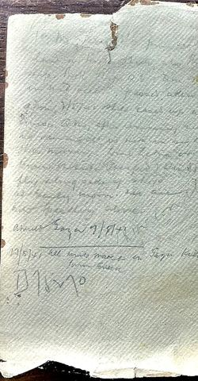
Very faint pencil, written over the paper lining. The first lines are mostly lost. [illegible] [?] ... Sunday 27th [?] ... 1st May ... passed Aden ... 2/5/41 at about 9 pm. ... Port Tewfik ... Saturday [?] ... anchored ... Suez ... ... disembark ... [?] on 6/5/41 ... small ship ... Kantara ... entrained ... 7/5/41 ... Arrived Gaza 7/5/41 [?] 17/5/41 All units moved in Gaza, Kilo 89, from Suez [?] D 75270 (his rifle number, see Tent 17 list below)
These lines appear to be a first jotting of the voyage dates, repeated more fully on the next pages.
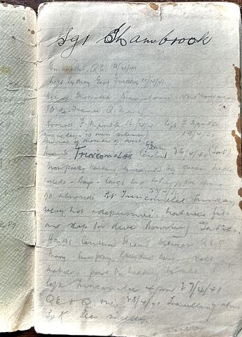
Sgt Shambrook. Embarked Q.E. 9/4/41. Left Sydney Good Friday 11/4/41. Convoy: Australia [?], Mauretania, New Amsterdam, Ile de France, Q. Mary. Arrived Fremantle 16/4/41. Left Fremantle 19/4/41. Anzac Day. 10 min silence. Burial of member of crew. Arrived Trincomalee, Ceylon, 6.30 am 26/4/41 (Sat). Very pretty harbour, surrounded by green hills, inlets, bays. Large bay but very few ships. No shore leave. 27/4/41 At Trincomalee Sunday. Very hot and depressing. Natives [?] on most buildings for dive-bombing [?]. HMAS Canberra steamed between Q.E. and Q. Mary, band playing. [?] Natives paddle out to the ship [?]. Left Trincomalee 4 pm 27/4/41. Q.E. and Q.M. 28/4/41 travelling about 30 knots. Seas swelly.
Q.E. is the troopship Queen Elizabeth, on her first trooping voyage. The convoy was US.10. Bernard's fair copy on a later page names HMAS Australia as the escort out of Sydney.
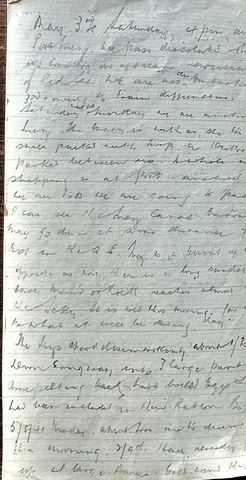
May 3rd Saturday 4 pm arrived Port Tewfik. We pass desolated, burnt-up country on approach, mountain, gulf of Red Sea. We are now embarked on 3rd and [?] owing to train difficulties. So on Saturday and Sunday we are anchored in Suez. The Mary is with us. She too is so packed with troops. A destroyer is parked between us. A whole nest of shipping is at anchor. Anchored apart. We are told we are going to Palestine. Can see the Suez Canal entrance, we may go down it some distance, 7 or 8 [?] on the Q.E. Suez is a burnt-up-looking port opposite us here. There is a long sandstone cliff or rock reaches almost up to the jetty. It is cool this morning, for different [?] what it will be during the day. The lads start disembarking about 1.30 pm down gangway into 3 large punts. Are pelting back hard-boiled eggs which had been included in their ration box. 5/5/41 Monday. About 500 are to disembark this morning, 2/9th. Have already pulled up 2 large barges. Boats around the morning (continues on the next page)
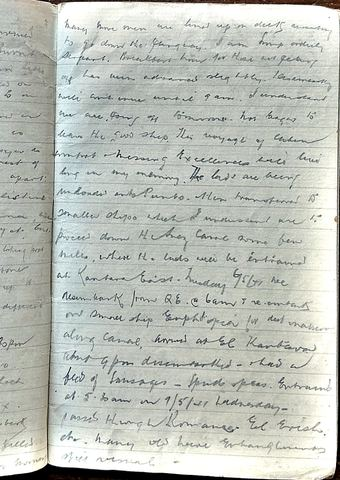
Many more men are lined up on decks waiting to go down the gangway. I am Ship Orderly Sergeant. Breakfast time for those not getting off has been advanced slightly. Disembarking will continue until 9 am. I understand we are going off tomorrow. Not eager to leave the good ship. The voyage of course, comfort and messing excellences will live long in my memory. The lads are being unloaded onto punts, then transferred to smaller ships which I understand are to proceed down the Suez Canal some few miles, where the lads will be entrained at Kantara East. Tuesday 6/5/41 we disembark from Q.E. at 6 am and re-embark on small ship Ethiopia for the journey along canal. Arrived at El Kantara about 4 pm, disembarked, and had a feed of sausages, spuds and peas. Entrained at 5.30 am on 7/5/41 Wednesday. Passed through Romani, El Arish etc. Many old wire entanglements still visible.
The wire at Romani and El Arish was left from the 1916 to 1917 Sinai campaign, which an older soldier of the Light Horse generation would have known of, and may have fought in.
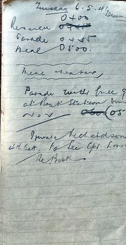
Tuesday 6.5.41. Disembarkation. Reveille 0400 0445 Parade 0445 Meal 0500. Meal water. Parade with full equipment at Boat Station 0600 05[?]. Private Richardson, 4th Battalion, to see Cpl Lowe [?] re boot.
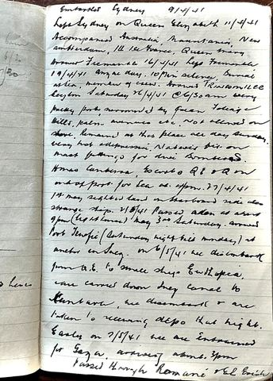
Embarked Sydney 9/4/41. Left Sydney on Queen Elizabeth 11/4/41. Accompanied by Australia, Mauretania, New Amsterdam, Ile de France, Queen Mary. Arrived Fremantle 16/4/41. Left Fremantle 19/4/41. Anzac Day. 10 min silence. Burial at sea, member of crew. Arrived Trincomalee, Ceylon, Saturday 26/4/41 at 6.30 am. Very pretty port, surrounded by green foliage, hills, palm avenues etc. Not allowed on shore. Remained at this place all day Sunday. Very hot and depressive. Natives [?] on most buildings for dive bombers. HMAS Canberra escorts Q.E. and Q.M. out of port for sea at 4 pm 27/4/41. 1st May sighted land on starboard side, also strange ship. 2/5/41 passed Aden at about 9 pm (lighthouse). May 3rd Saturday arrived Port Tewfik (Saturday night till Monday) at anchor in Suez. On 6/5/41 we disembark from Q.E. to small ship Ethiopia, are carried down Suez Canal to Kantara, we disembark and are taken to receiving depot that night. Early on 7/5/41 we are entrained for Gaza, arriving about 3 pm. Passed through Romani and El Arish. In the margin: 6 am. 6/2. 7.30.
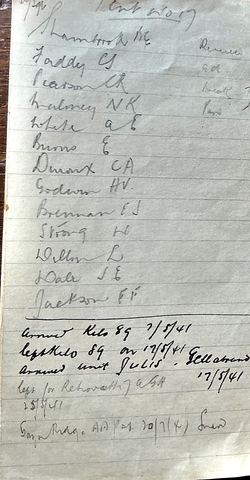
Tent No. 17. Shambrook B.E. (Sgt), Faddy C.S., Pearson C.R., Maloney N.K., White A.E., Burns E., Duroux C.A., Godwin H.V., Brennan E.J., Strong H., Dillon L., Dale J.E., Jackson F.F. In the margin: Dinner [?], lunch [?]. Arrived Kilo 89 7/5/41. Left Kilo 89 on 17/5/41. Arrived unit Julis 17/5/41. Left for Rehovoth, 7 AGH, 25/5/41. Gaza Ridge, A.A.P.D. [?], 20/7/41.
Kilo 89 was the big AIF staging camp near Gaza, named for its distance along the railway from Kantara. Julis was a camp a few miles north. 7 AGH is the 7th Australian General Hospital at Rehovot, so Bernard was a patient from 25 May. Gaza Ridge was the site of the AIF depots and the Australian hospital at Gaza.
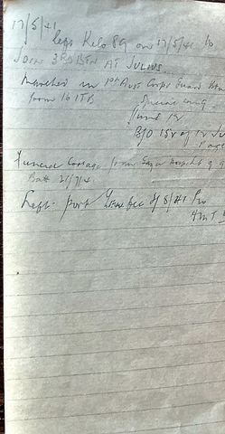
17/5/41. Left Kilo 89 on 17/5/41 to JOIN 3RD BTN AT JULIS. Marched in 1st Aust Corps Guard Btn from 16 ITB. Special wing June 12. B/O 15[?] of 12 June. Page [?]. Funeral cortege from Gaza hospital, 9 9[?] Batt, 21/7/41. Left Port Tewfik 4/8/41 pro[?] ... Am I [?]
16 ITB is the 16th Infantry Training Battalion, the reinforcement unit he arrived with. The 1st Australian Corps Guard Battalion was raised in Palestine in 1940 from older men judged unfit for the front line. They called themselves "the Old and the Bold". B/O is Battalion Orders. The last line, leaving Port Tewfik on 4 August 1941, is the latest dated entry in the notebook and may record his departure from the Middle East.
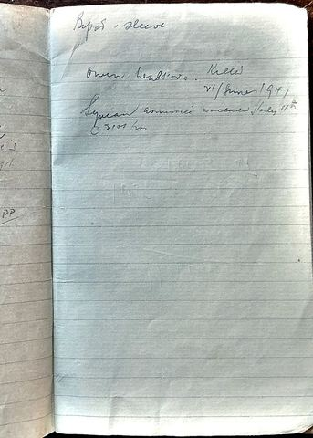
Bipod. Sleeve. (Bren gun parts) Owen Leathers. Killed 21 June 1941. Syrian armistice concluded July 11th at 2101 hrs.
21 June 1941 was the day the Australians took Damascus in the Syria campaign. The ceasefire in Syria took effect just after midnight on 12 July 1941.
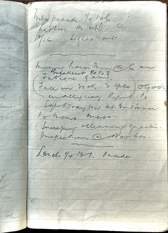
Mess parade quarter to 6. [?] M and D. O. D/C [?]. Lights out. Morning: raise men at 6 am. Breakfast quarter to 8. Fatigue 9 am. (Fall in NCOs and Cpls in alleyway. Report to Sgt Drayton at entrance to Men's Mess.) (Sweeping and cleaning quarters. Inspection at 11.00 hrs.) Lunch quarter to 1. Parades.
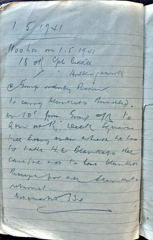
1.5.1941. 1100 hrs on 1.5.1941. 18 OR. Cpl Biddle, Cpl Hollingsworth. At Group Orderly Room to carry blankets bundled. At 10' from Group O/R to Q.M. at R Deck Square. Tell every man where he has to take the blankets etc. Careful not to lose blankets. Receipt for all blankets returned. [?] 330.
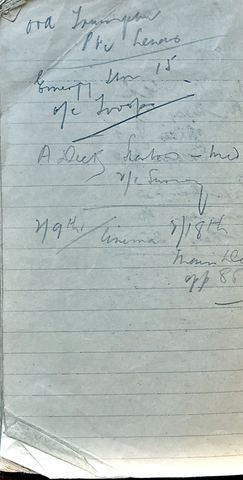
Ord. Transport. Pte Lewis. Emergency [?] 15. O/C troops A Deck Saloon, mid. 2/c Survey [?]. 2/9th. Cinema. 2/18th. Main deck. Off 85 [?].
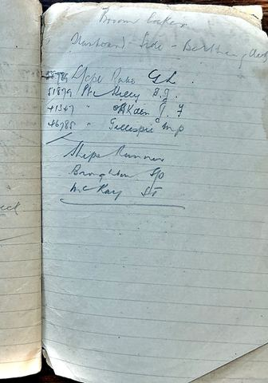
Broom lockers. Starboard side, berthing deck. [5?]784 L/Cpl Rabe G.L. 51879 Pte Kelly J.J. 41347 " Aitken J.T. 46785 " Gillespie M.P. Ship's runners: Broughton 90 [?], McKay 51 [?].
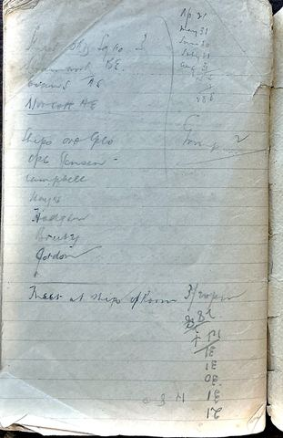
Signal [?] Old Sgts 10. 3. Shambrook B.E. Evans A.S. Norcott H.E. Ship's Ord. Cpls: Cpl Jensen, Campbell, Hayes, Hodges, Brady [?], Gordon. Meet at ship's office room 3 [?]. Right column: Ap 21 [?], May 31, June 30, July 31, Aug 31. 15. 7. 288. Below: 31 + 51, 31, 31, 30, 31, 21. Also: 0.8.4.
The column of month lengths looks like a tally of days since embarkation. Signal Sgts may be a reading of "Senior Sgts".
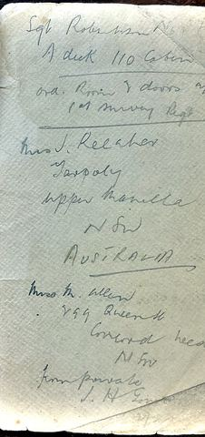
Sgt Robertson [?]. A deck 110 cabin. Ord. Room and doors, 1st Survey Regt. Mrs J. Kelaher, Tarpoly, Upper Manilla, N.S.W., Australia. Mrs M. Allen, 299 Queen St, Concord West, N.S.W. From Private L. H. [?]...
Tarpoly is a property near Upper Manilla, north of Tamworth. The same family appears again on the Gaza graves page.
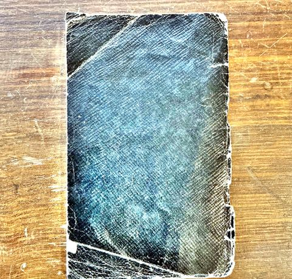
Worn black cloth. No writing.
The working pages of a sergeant: rolls of the men he was responsible for, weapon notes, guard rosters, phrases and sums.
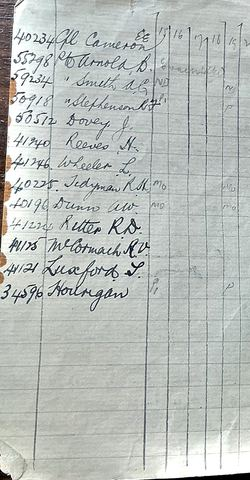
Columns ruled and headed 15 to 24, probably days of the month, with marks against some names.
| 40234 | Cpl Cameron E.E. | |
| 55298 | Pte Arnold B. | "Evacuated" written across the columns |
| 59234 | Pte Smith A.G. | ND [?], later P [?] |
| 50918 | Pte Stephenson R.J. | P, later P |
| 50512 | Dovey J. | |
| 41340 | Reeves H. | |
| 41246 | Wheeler L. | |
| 40225 | Tedyman R.M. [?] | MO, later MO |
| 40196 | Dunn A.W. | MO, later MO |
| 41224 | Ritter R.D. | |
| 41175 | McCormack R.V. | |
| 41121 | Luxford S. [?] | |
| 34596 | Hourigan | P, later P |
P is probably "parade" or "present"; MO is the medical officer's sick parade. The numbers are NX service numbers with the prefix left off.
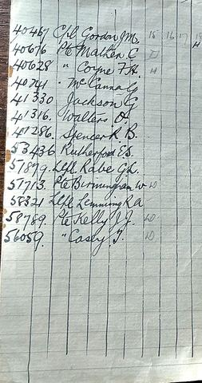
| 40467 | Cpl Gordon J.M. | |
| 40676 | Pte Walker C. | D (boxed) |
| 40628 | Pte Coyne F.A. | H |
| 40741 | Pte McCanna G. | |
| 41330 | Jackson G. | |
| 41316 | Walters D. | |
| 41286 | Spencer R.B. | |
| 53436 | Rutherford E.S. | |
| 51879 | L/Cpl Rabe G.L. | |
| 57713 | Pte Birmingham W. | W |
| 58321 | L/Cpl Lemming R.A. | |
| 58789 | Pte Kelly J.J. | W |
| 56059 | Pte Casey J. | W |
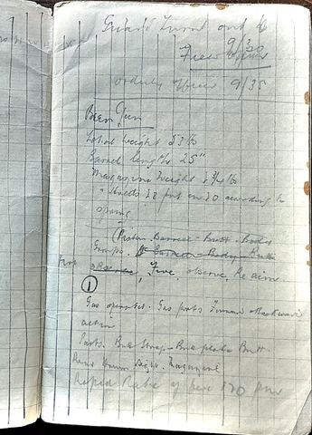
Guard turned out to Field Officer 9.30. Orderly Officer 9.35. Bren Gun. Total weight 23 lb. Barrel length 25". Magazine weight 2 3/4 lb [?]. Holds 28 but 30 according to spring [?]. Groups: Piston, Barrel, Butt, Body. Barrel, Body, Butt. Fire: observe. Fire, observe, re-aim. (1) Gas operated. Gas ports, forward and backward action. Parts: butt strap, butt plate, butt. Rear drum sight. Magazine. Rapid rate of fire 120 per minute.
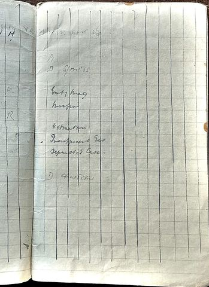
Columns headed 19 to 26 continue from the roll opposite. Key: P1 [?], D (boxed). Bren stoppages: empty magazine, misfire, extraction, insufficient gas, separated case. 1) [illegible]
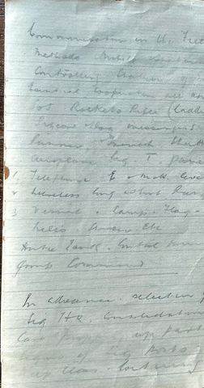
Communication in the Field. Methods: mobile, [?], controlling station, [?], cable, co-operation, all arms [?], SOS, rockets, rifle (cradle [?]), pigeon, flag, messengers, [?], runner, armoured, aeroplane, signal, T. [?]. 1. Telephone, E and M.H. [?] 2. Wireless, long, short range. 3. Visual: lamp, flag, helio, [?] etc. Anti-tank. Control [?] ... Group command. In advance: selection of Sig HQ, consolidation, care, [?], parties, lines of Sig posts, keep clear, lot wires [?].
Very faint pencil. Enough survives to show it is a standard infantry signals lecture.
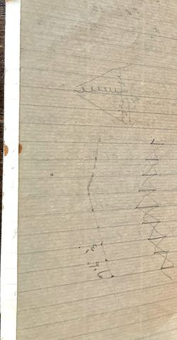
Faint pencil marks only: a looped line and a zigzag. No text.
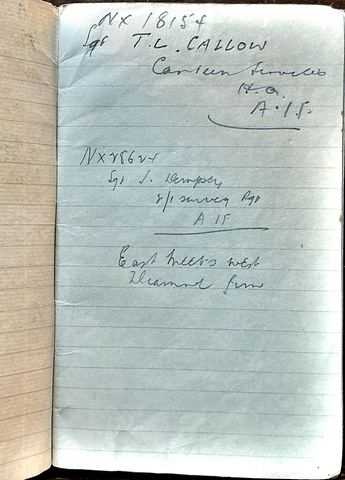
NX 18154 Sgt T. L. Callow, Canteen Services, H.Q. A.I.F. NX 28624 [?] Sgt J. Dempsey, 2/1 Survey Regt, A.I.F. East meets west. Diamond Jim [?].
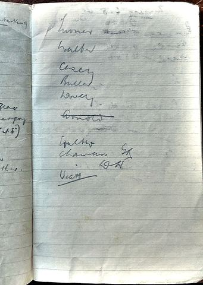
Turner, Walker, Casey, Bull, Dovey, Arnold, Walker, Chambers G.A., D.H., Vealey [?].
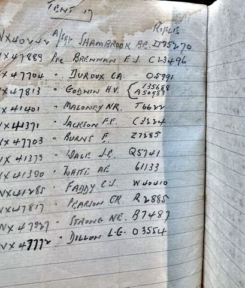
| NX 40242 | A/Sgt Shambrook B.E. | rifle D75270 |
| NX 47889 | Pte Brennan E.J. | C23496 |
| NX 47704 | Pte Duroux C.A. | O5991 |
| NX 47813 | Pte Godwin H.V. | 135688 / A50983 |
| NX 41401 | Pte Maloney N.K. | T6622 |
| NX 41371 | Pte Jackson F.F. | C3224 |
| NX 47703 | Pte Burns E. | Z7285 |
| NX 41379 | Pte Dale J.E. | Q5741 |
| NX 41390 | Pte White A.E. | 61133 |
| NX 41285 | Pte Faddy C.J. | W40410 |
| NX 47817 | Pte Pearson C.R. | R2885 |
| NX 47927 | Pte Strong N.E. | B7487 |
| NX 47772 | Pte Dillon L.G. | O3554 |
This is the clearest statement of Bernard's own number, NX40242, and his rank at the time, Acting Sergeant.
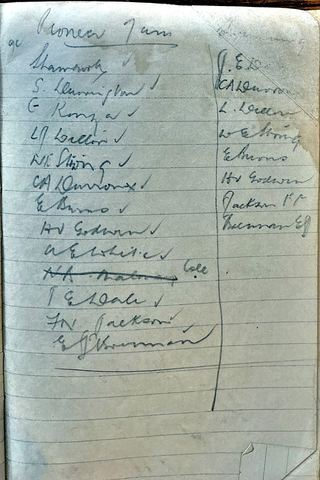
Heading unclear, possibly Pioneer [?]. Shambrook ✓, S. Herrington ✓, G. Konza ✓, L.J. Dillon ✓, H. Strong ✓, C.A. Duroux ✓, E. Burns ✓, H.V. Godwin ✓, A.E. White ✓, H.A. Maloney Cole, J.E. Dale ✓, F.N. Jackson ✓, E.J. Brennan. Right column: J.E. Dale, C.A. Duroux, L. Dillon, W.E. Strong, E. Burns, H.V. Godwin, Jackson F.F., Brennan E.J.
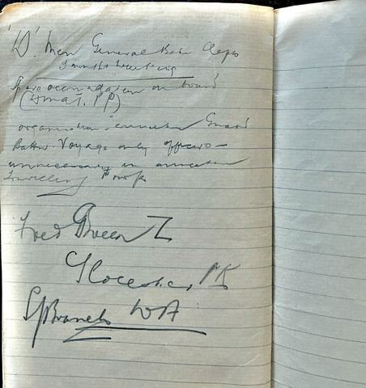
Guard. Company parade ground at 17.15, 5.15. Mount 1800. S.D. uniform. Gaiters. Hats. Web equipment. Pack on back. Water bottle. Summer dress. Blankets. Haversack to be worn, shaving gear and towel. Brigade Guard.
| NX 40242 | Cpl/Sgt Shambrook B.E. | |
| 41304 | A/Cpl Carey L.V. | ✓ |
| 41356 | Pte Wright A.J. | ✓ |
| 47650 | Pte Gilles D. | ✓ |
| 41308 | Pte Paget F.G. | ✓ |
| 41406 | Pte Kennedy J.M. | ✓ |
| 47491 | Pte Kelly J. | ✓ |
| 47689 | Pte Manusu P.B. | ✓ |
| 47786 | Pte Fory J. | ✓ |
| 41335 | Pte Philip R.G. | ✓ |
| 47767 | Pte Ingleman F.M. | ✓ |
| 47831 | Pte Rose F. | ✓ |
| 47849 [?] | Pte Watts T.H. | ✓ |
| 41345 | Pte Johnson R.W. | ✓ |
(1 Sgt, 1 Cpl, 12 OR.)
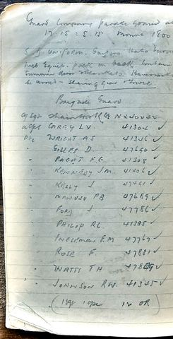
17: Duroux Burns E. ✓, Godwin H.V. ✓ | Brennan, Strong. 16: Watts T.A., Manusu | Konza, Johnson. 15: Donaldson, Cole | Williams, Costello. 6 to 8: No 1 Rose and Fory ✓; No 2 Paget and Gilles ✓. 8 to 10: Ingleman, Philip ✓; No 2 Watts and Kelly ✓. 10 to 12: Wright and Manusu ✓; No 2 Johnson, Kennedy ✓.
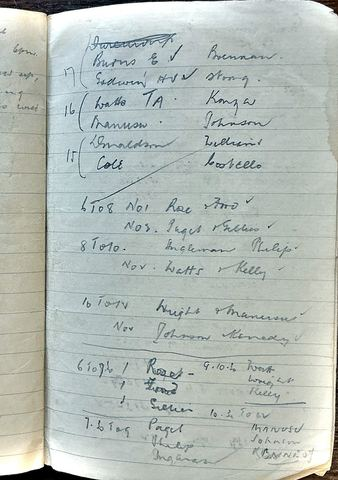
6 to 7.30: Paget, Fory [?], Gilles | 9 to 10.30 [?]: Watts, Wright, Kelly. 7.30 to 9: Paget, Philip, Ingleman | Manusu, Johnson, Kennedy. 10.30 to 12 [?] ...
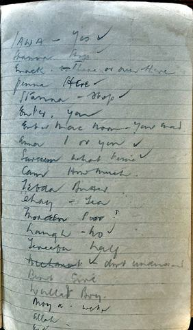
| Iawa | yes | aiwa |
| Hanna [?] | here | hena |
| Enack | there, or over there | hinak |
| Jenna | here | hena |
| Stanna | stop | istanna, wait |
| Enter | you | enta |
| Enter mac nom [?] | you and [?] | |
| Ana | I | ana |
| Saeeum [?] | what time | sa'a kam |
| Cam | how much | kam |
| Fedda | [?] | fedda, silver |
| Chay | tea | shai |
| Moaseen | poor | maskeen |
| Langh | no | la' |
| Tereefa | half | ta'rifa, a half-piastre coin |
| [struck] | don't understand | |
| Qwis | good | kwayyis |
| Wallad | boy | walad |
| Moya | water | moya |
| Allah | ||
| Est... [?] | cut off at the foot of the page |
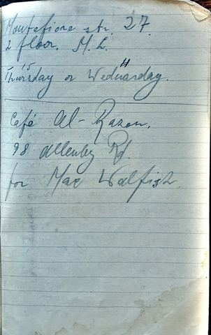
Montefiore Str. 27, 2nd floor. M.L. Thursday 15 or Wednesday 14. Café Al-Razon [?], 98 Allenby Rd, for Max Walfish.
Montefiore Street and Allenby Road are in central Tel Aviv, the usual leave town for the AIF in Palestine. Thursday 15 and Wednesday 14 fit May 1941.
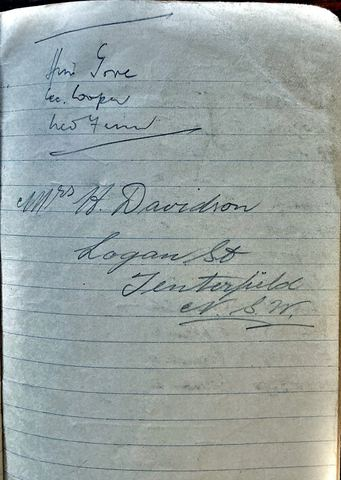
Hui Gove [?], Lee Cooper, Leo Fenn [?] (bracketed together). Mrs H. Davidson, Logan St, Tenterfield, N.S.W.
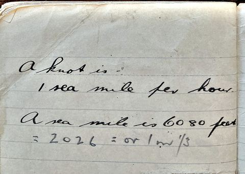
A knot is 1 sea mile per hour. A sea mile is 6080 feet = 2026 yards, or 1 and 1/3 miles [?].
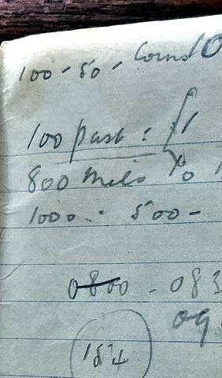
100 - 50 - Cornd [?] O... 100 piastres = £1. 800 mils = [?]. 1000 = 500 [?]. 0800 0830. 09[?]. (18 1/4).
Working out the money: 100 piastres to the Egyptian pound, 1000 mils to the Palestine pound.
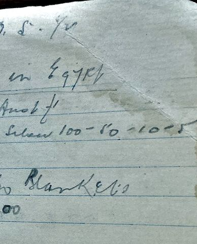
D. S. [?] 1/4 [?]. ... in Egypt. Just £1 [?]. Silver 100 - 50 - 10 - 5. Blankets. 00.
In June 1941 Bernard walked the Gaza War Cemetery and copied the headstones of Light Horsemen who fell there in 1917 and 1918, with the home towns of their families. He sketched the memorials at Gaza and at Jerusalem. These pages take up more of the notebook than anything else.
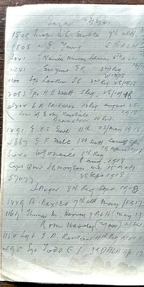
Gaza 23/6/41 [?] 1529 Trooper A.C. Gentle, 9th ALH. 1808 Trooper G. Young, 8th ALH. 3021 Trooper Neville Murray Johnson, 6th ALH. 1241 Gwynne F.K., 2nd Regt, 16/10 [?]. 1100 Sgt Larkin S.C., 2nd Regt, 2/10/18, 28/10/18. 2083 Tpr H.B. Watt, 5th Regt, 28/10/18. 2202 L.A. Fairhall, 12th Regt, August 28 1918, son of E. and M. Fairhall, Branxton, N.S.W. 1291 Sgt C.T. Grove, 11th, 23 May 1918. 3867 G.F. Melt, 1st Battalion Camel Corps, 15 April 1917. 5040 W.J. O'Neill, 8th Regt, 8 Aug 1918. Capt QM J.B. Moulton MC, 15th ALH, 28 Sept 1918. 57077 J. Auger, 8th Regt, Sept 1918. 1889 A. Baxter, 7th ALH, May 1917. 1169 Thomas M. Harvey, 7th ALH (May 17), R. and M. Harvey, Yass, N.S.W. 1152 Sgt T.A. Rankin, 11th Regt, Nov 1[?]. 295 Sgt Todd C.J., 3rd ALH [?], April 1917.
ALH is Australian Light Horse. The April 1917 dates are the Second Battle of Gaza. Branxton and Yass are Hunter Valley and Southern Tablelands towns, which may be why he noted them.
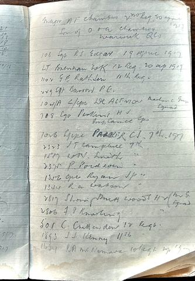
Major A.F. Chambers, 2nd Regt, 20 April 1917, son of O. and A. Chambers, Warwick, Qld. 108 Sgt R.S. Edgar, 19 April 1917. Lt Brennan W.K., 12th Regt, 20 April 1917. 1102 G.E. Rathjen [?], 11th Regt. 229 Sgt Barrow P.C. 104/A L/Cpl W.E. Allison [?], Machine Gun Squadron. 708 Cpl Perkins H.J., Imperial Camel Corps. 1026 L/Cpl Parker C.J., 7th, 1917. 2323 J.T. Campbell, 7th. 1517 W.N. Smith, 7th. 2375 P. Poidevin, 7th. 1352 Cpl Ryan J.P., 7th. 1344 R.A. Watson, 7th. 2817 Shoeing Smith Woods H.W. (M.G. Squadron). 2806 F.P. Knowling, 7th. 501 C. Crittenden, 12th Regt. 1893 J.J. Kenny, 11th. 1634 R.A. McNamara, 10th Regt, April 1917.
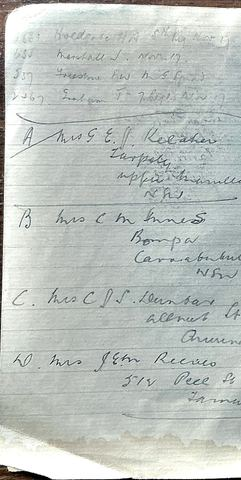
2681 [?] Hoeldense [?] H.A., 8th Regt, Nov 17. 638 Marshall J., Nov 17. 557 Freestone [?] F.W., M.G. Squadron. 2467 Graham [?] T., 7th Regt, Nov 17. A. Mrs G.E.H. Kelaher, Tarpoly, Upper Manilla, N.S.W. B. Mrs C.M. Innes, Bompa [?], Currabubula, N.S.W. C. Mrs C.J.S. Dunbar, Allnut St, Armidale [?]. D. Mrs J.E.M. Reeves, 512 Peel St, Tamworth.
November 1917 is the Third Battle of Gaza and the Beersheba advance. The four addresses are all in the Tamworth and New England district of New South Wales. They may be the families of mates, or of the men buried here. Compare the Kelaher address on the last page.
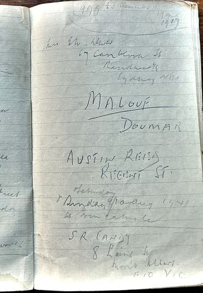
999 [?] 83 Clements, 19 ... 1917 (circled). Mrs Eth. Olives [?], 67 Cambera [?] St, Randwick, Sydney, N.S.W. Malouf. Doumar. Austin Reid, Regent St. Saturday and Sunday 9/10 Aug 1941 at Iron Camele [?]. S.R. (Andy), 8 Laing St, Mont Albert E10, Vic.
Malouf and Doumar are Lebanese family names, probably shopkeepers. The "Iron Camel" line is the last date in the book, a weekend after he left Port Tewfik on 4 August.
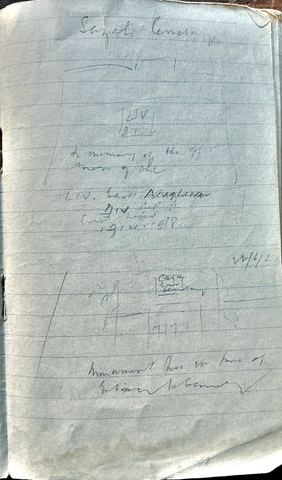
Gaza Cemetery. [sketch of a cross on a stepped base] LIV Div. In memory of the officers and men of the LIV East Anglian Division ... 1914-1918. 22/6/41 [?]. [sketch of the cemetery entrance] Monument this in line of entrance to cemetery.
The 54th (East Anglian) Division fought at Gaza in 1917 alongside the Australians.
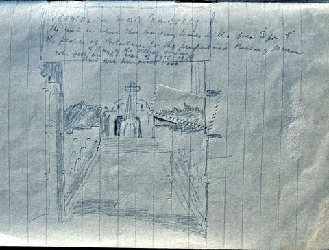
Jerusalem War Cemetery. The land on which this cemetery stands is the free gift of the people of Palestine for the perpetual resting place of those of the allied armies who fell in the war of 1914-1918 and are honoured here. [sketch of the cemetery entrance and memorial]
This is the standard inscription on the entrance of Commonwealth war cemeteries in Palestine. The cemetery is on Mount Scopus. The visit is undated.
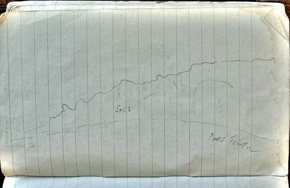
A pencil profile of the hills behind the port, drawn from the anchorage, labelled Suez and Port Tewfik.
Men Bernard served with, as he wrote their names. Service numbers are NX unless stated. A name may appear more than once with small differences in initials.
The Queen Elizabeth had never carried a paying passenger. She was finished in secret in 1940 and this April 1941 sailing from Sydney was her first voyage as a troopship. With the Queen Mary, Mauretania, Ile de France and Nieuw Amsterdam she formed convoy US.10, escorted out of Sydney by HMAS Australia and from Ceylon by HMAS Canberra. The two Queens were too big for the Canal, which is why the men were ferried down to Kantara in small ships and put on the train.
Kilo 89, Julis and Gaza Ridge were the AIF's base camps in southern Palestine, strung along the railway and the coast road north of Gaza. Kilo 89 held the training battalions where reinforcements like Bernard's 16th Infantry Training Battalion waited for a posting. The 7th Australian General Hospital was at Rehovot, nearer Tel Aviv. The 1st Australian Corps Guard Battalion, which Bernard joined on 17 May 1941, guarded Corps headquarters and base installations and was made up of older men not fit for the front line. The Light Horse graves he copied at Gaza, and the attention he paid to their home towns, suggest he belonged to that older generation himself.
Bernard's full service record can be requested from the National Archives of Australia, series B883, under NX40242. The Department of Veterans' Affairs World War Two Nominal Roll at nominal-rolls.dva.gov.au gives his enlistment, next of kin and unit at discharge. The Australian War Memorial holds the war diary of the Australian Headquarters Guard Battalion (AWM52).